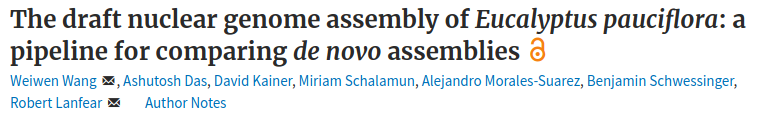
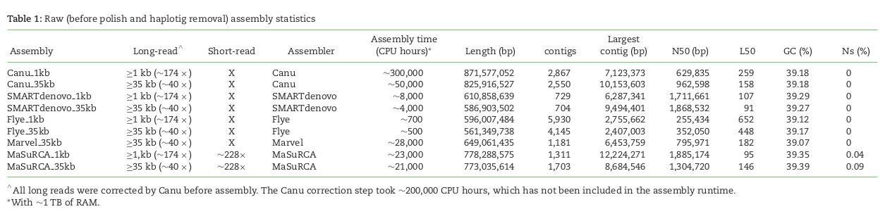
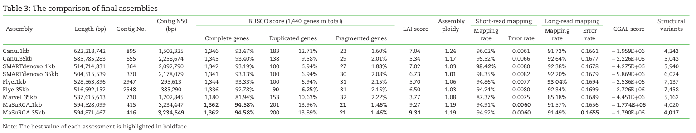

Principles and Applications of Modern
DNA Sequencing
EEEB GU4055
Session 11: Genome Assembly
Today's topics
1. de Bruijn Graphs and Euler.
2. Kmers.
3. Challenges in Genome Assembly.
4. Empirical Example.
Kmers and de Bruijn graphs
Reads start and end at different positions covering all or nearly all of the genome. Decomposing reads into smaller kmers makes it more likely that we have uniformly sized bits covering the entire genome. This is useful for building a graph.

Kmers and de Bruijn graphs
Shortest possible superstring that contains all substrings of length k.
Kmers and de Bruijn graphs
Hamiltonian graph requires comparing/aligning kmers, which is hard when the number and size of kmers is large. de Bruijn graphs join identical matching (k-1)mers, such that kmers form the edges of the graph -- a much simpler computation.
Genome Assembly

denovo Genome Assembly
denovo genome assembly is computationally demanding. Requires reads that cover the full genome many times (e.g., 50X). The end goal is to assemble scaffolds that match to chromosomes -- the real *bits* of the genome.

Combining short and long-read technologies
Short read assemblies are highly fragmented. Long read technologies are highly error prone. Combining the two technologies -- while obtaining high-coverage of both -- is currently the gold standard.

Caveats: Long reads require HMW DNA, sometimes a lot.
Specialized DNA extraction kits and protocols are used to isolate long (unbroken) DNA fragment lengths. More expensive and time-consuming, but worth it.
Eucalypus: (500Mb size, 170X ONT; 200X Illumina)
  Scaffolding: Hi-C Proximity Ligation
Chromosome conformation capture (3C) describes the structure of the genome within a cell; it's organization and structure. Better than microscopy, can tell us how close together (potentially interacting) some regions of the genome are (such as promoters and enhancers).
Hi-C: A highthroughput version of 3C is based a library preparation to build chimeric reads followed by short-read sequencing of paired-end reads. Creates a contact map of interactions correlated to spatial distance.
Scaffolding: Hi-C Proximity Ligation
Restriction digestion; streptavidin bead extraction; paired-seq.
Scaffolding: Amaranthus Hi-C Assembly